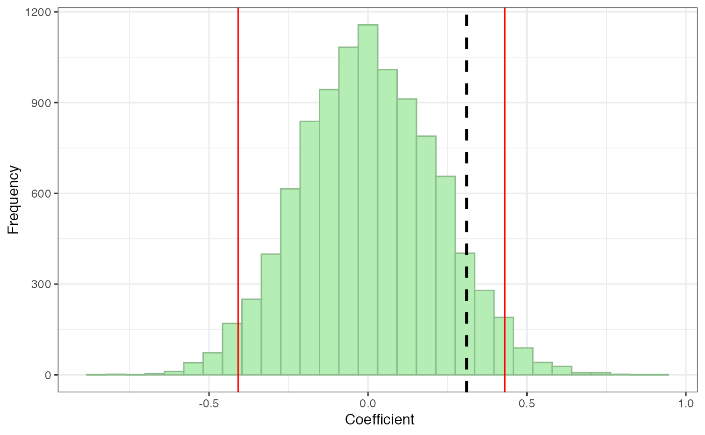
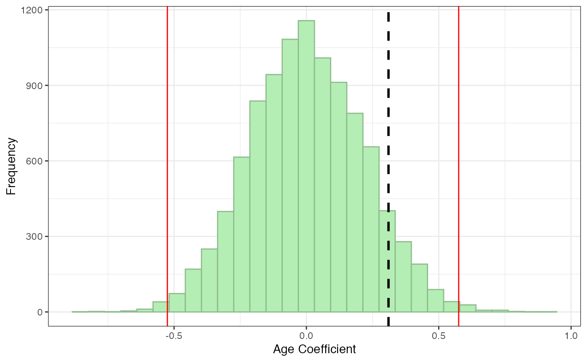

vignettes/Using-sneasy-package.Rmd
Using-sneasy-package.RmdThe sneasy package contains a variety of helper functions used to make social network analysis easier. These functions were created for Group Dynamics Lab members and affiliates. Anyone can use the functions, with proper citation. However, many of the functions (e.g., buildnet) are quite specific to the way we set up data and the type of networks we study in our lab.
To use the sneasy package, you first need to install it from Github. You can do this with the following lines of code:
install.packages("devtools")
devtools::install_github("kturetsky/sneasy")Next, load the sneasy package:
The sneasy package contains four categories of functions: (1) functions for forming networks from collected data (buildnet and attachatt), (2) functions for calculating node-level network metrics, such as centrality (centdf), reciprocity (tierecip), and diversity (simpsd, homophily, groupcount), (3) shortcut functions to use in node permutation tests (nodeperm and pperm), and (4) a couple other additional functions that are often handy during SNA (gmc and rescale01). The package also contains sample data (bionet and attfile). You can always run ?buildnet, ?attachatt, etc. to view additional information about each function or dataset.
This vignette demonstrates how to use the sneasy package in social network analysis, beginning with forming networks in R from collected network data and ending with node permutation tests of significance.
The first step in lab social network analysis projects is typically to convert the network data you collected (e.g., in Qualtrics) to a network object in R. We typically use igraph network objects, which are called “graphs.”
The buildnet and attachatt functions in the sneasy package help you do this easily. However, you need to have your data set up in a particular way to use the functions.
The data frame bionet, included in the sneasy package, demonstrates how network data should be set up. (Run ?bionet to read more about the dataset.) The data should be set up in wide format, with one row per participant. There should be a column called “PPID” that contains the IDs of your participants. The subsequent columns correspond to each participants’ nominations of network ties.
head(bionet)
#> PPID Friend1Name Friend2Name Friend3Name Friend4Name Friend5Name
#> 1 4 NA NA NA NA NA
#> 2 10 120 252 134 514 NA
#> 3 14 281 NA NA NA NA
#> 4 15 389 410 445 531 NA
#> 5 18 546 487 385 48 94
#> 6 19 NA NA NA NA NA
#> Friend6Name Friend1Strength Friend2Strength Friend3Strength
#> 1 NA NA NA NA
#> 2 NA 5 5 3
#> 3 NA 4 NA NA
#> 4 NA 3 4 3
#> 5 283 3 3 2
#> 6 NA NA NA NA
#> Friend4Strength Friend5Strength Friend6Strength Study1Name Study2Name
#> 1 NA NA NA NA NA
#> 2 1 NA NA 120 252
#> 3 NA NA NA 281 NA
#> 4 4 NA NA NA NA
#> 5 2 3 2 546 283
#> 6 NA NA NA NA NA
#> Study3Name Study4Name Study5Name Study6Name Study1Strength
#> 1 NA NA NA NA NA
#> 2 NA NA NA NA 2
#> 3 NA NA NA NA 2
#> 4 NA NA NA NA NA
#> 5 385 96 94 487 1
#> 6 NA NA NA NA NA
#> Study2Strength Study3Strength Study4Strength Study5Strength
#> 1 NA NA NA NA
#> 2 2 NA NA NA
#> 3 NA NA NA NA
#> 4 NA NA NA NA
#> 5 1 1 1 1
#> 6 NA NA NA NA
#> Study6Strength Support1Name Support2Name Support3Name Support4Name
#> 1 NA NA NA NA NA
#> 2 NA 120 252 NA NA
#> 3 NA NA NA NA NA
#> 4 NA NA NA NA NA
#> 5 3 546 487 NA NA
#> 6 NA NA NA NA NA
#> Support5Name Support6Name Support1Strength Support2Strength
#> 1 NA NA NA NA
#> 2 NA NA 1 1
#> 3 NA NA NA NA
#> 4 NA NA NA NA
#> 5 NA NA 4 4
#> 6 NA NA NA NA
#> Support3Strength Support4Strength Support5Strength Support6Strength
#> 1 NA NA NA NA
#> 2 NA NA NA NA
#> 3 NA NA NA NA
#> 4 NA NA NA NA
#> 5 NA NA NA NA
#> 6 NA NA NA NAIn this data, we have three network types. Participants nominated friends, study partners, and support providers. For each of the networks, the data contains two pieces of information for each nomination: who is nominated and an indication of the strength of the relationship.
The columns Friend1Name-Friend6Name, Study1Name-Study6Name, Support1Name-Support6Name contain the IDs of the individuals that each participant nominated. (In this case, each participant could nominate up to 6 friends, but it could be more or fewer in other studies.) For example, for the friend network, participant 4 did not nominate any friends and participant 10 nominated participants 120, 252, 134, and 514 as friends.
These columns must use the naming convention [network type][nomination number][either 'Name' or 'ID'] – e.g., either Friend1Name or Friend1ID.
The columns Friend1Strength-Friend6Strength, Study1Strength-Study6Strength, Support1Strength-Support6Strength contain values corresponding to the strength of the respective relationship. These can be different types of relationship strength metrics. In this study, friendship strength was participants’ reported closeness to the friend they nominated on a scale from 1 (not very close) - 5 (very close), study partner strength was the amount that the participant reported studying with the study partner they nominated on a scale from 1 (once a month or less) - 3 (twice a week to every day), and support provider strength was the likelihood that the participant would go to the support provider for support with a problem on a scale from 1 (rarely) - 4 (always).
The naming convention for relationship strength variables is [network type][nomination number][strength type]. The first part, [network type][nomination number], must exactly correspond to the “who is nominated” columns, and [strength type] can be any string – Friend1Strength, Friend1Close, etc. – but it’s easy to just use “Strength” if you only have one metric of relationship strength.
The order of the columns does not matter but there must be one strength variable for each nomination (e.g., if we had a Friend7Name column, we would also need a Friend7Strength column). There could also be more than one strength variable for each nomination, if you have multiple metrics of relationship strength (e.g., Friend7Close, Friend7TimeSpent, Friend7Phone). The data also does not need to include multiple networks. It could just include one network type.
Next, we want to convert the wide social network data (as described above) into a usable network format. We can do this with buildnet. buildnet requires, at minimum, the wide social network data frame and a string containing the name of the network you want to process, matching the column names in the wide social network data (e.g., in the bionet data, this could either be “Friend”, “Study”, or “Support”). Unless otherwise specified, buildnet will return an igraph graph object. The graph will be weighted and directed.
fg <- buildnet(bionet, "Friend")
fg
#> IGRAPH a85f4f6 DNW- 460 855 --
#> + attr: name (v/c), weight (e/n)
#> + edges from a85f4f6 (vertex names):
#> [1] 10->120 10->134 10->252 10->514 14->281 15->410 15->445 15->389
#> [9] 15->531 18->94 18->283 18->385 18->487 18->546 18->48 23->106
#> [17] 23->316 23->1 24->168 24->328 24->417 24->344 24->259 24->59
#> [25] 26->233 26->361 26->126 26->440 30->71 30->116 30->180 30->222
#> [33] 30->348 33->168 36->247 36->516 38->147 38->199 38->233 38->342
#> [41] 38->487 38->480 40->252 40->433 40->485 41->184 41->186 41->504
#> [49] 41->6 47->486 55->108 55->122 55->149 55->209 56->258 56->386
#> [57] 57->408 57->355 63->149 67->300 67->526 69->294 69->399 69->429
#> + ... omitted several edgesIf your data’s tie strength variables end in something different than “Strength,” you will need to specify the weighttype argument. For example, if your variables are named Friend1Close, Friend2Close, etc., you would run:
buildnet(bionet, "Friend", weighttype = "Close")This function can also generate a network matrix or edgelist, instead of an igraph graph.
Generate a matrix
fmat <- buildnet(bionet, "Friend", return = "matrix")
fmat[c(1:10), c(1:10)]
#> 4 10 14 15 18 19 20 23 24 26
#> 4 0 0 0 0 0 0 0 0 0 0
#> 10 0 0 0 0 0 0 0 0 0 0
#> 14 0 0 0 0 0 0 0 0 0 0
#> 15 0 0 0 0 0 0 0 0 0 0
#> 18 0 0 0 0 0 0 0 0 0 0
#> 19 0 0 0 0 0 0 0 0 0 0
#> 20 0 0 0 0 0 0 0 0 0 0
#> 23 0 0 0 0 0 0 0 0 0 0
#> 24 0 0 0 0 0 0 0 0 0 0
#> 26 0 0 0 0 0 0 0 0 0 0In a network matrix, the row and column names correspond to each participant ID. The rows are the nominators and the columns are the nominated individuals (i.e., the first row are participant 4’s nominations of herself (0 by default), participant 10, participant 14, etc.). The value in each cell is either 0, representing no tie, or a value corresponding to the strength of the tie (i.e., 1-5 for the friend network in the bionet data). This particular network is very sparse, so this snippet of the matrix just looks like a bunch of zeroes, but other cells contain values 1-5.
Generate an edgelist
fel <- buildnet(bionet, "Friend", return = "edgelist")
head(fel)
#> from to weight
#> 1 4 4 0
#> 2 10 120 5
#> 3 14 281 4
#> 4 15 389 3
#> 5 18 546 3
#> 6 19 19 0Edgelists are a long form representation of the network, including one row per tie. The from column contains the nominator’s ID, to contains the nominated person’s ID, and weight contains the strength of the tie reported by the nominator. Edgelists produced by buildnet will include a self-nomination with a weight of 0 for individuals who did not nominate anyone. This is just to retain these individuals in the network as isolates (otherwise they would be dropped from the network for having no ties). You can always remove isolates from an igraph graph g later, using delete.vertices(g, degree(g)==0).
Missing tie strength data
One additional item to consider is whether there is any missing tie strength data. Depending on how the networks were collected, a participant may occasionally nominate a tie but leave the tie strength rating blank for that nomination. buildnet retains these ties but must make an assumption about what the value of the tie should be. The default imputation is 1 (assuming the weakest tie if strength ratings begin at 1), but you can change this to any value (e.g., the mean tie strength, a fraction if your tie strength ratings range from 0-1, etc.).
For example, if you want to set missing tie weights to the mean friend tie strength rating, you could run:
buildnet(bionet, "Friend", missingweight = mean((unlist(bionet[,8:13])), na.rm=TRUE))Rescaling tie strength values
If you have multiple networks with tie strength variables on different scales, as in the bionet data (friend strength ratings range from 1-5, study strength ratings range from 1-3, etc.), you may want to rescale them to be directly comparable using included function rescale01.
Current weights:
head(E(fg)$weight)
#> [1] 5 3 5 1 4 4Rescaled weights:
Remember that even though the strength ratings only range from 1-5, the minimum should be specified as 0, since 0 means no tie. Otherwise ratings of 1 will be converted to 0.
To save the rescaled values as the network weights, you would run:
E(fg$weight) <- rescale01(E(fg)$weight, min=0, max=5)Next, we often want to attach participant attributes – individual-level data such as gender, race, attitude scales, etc. – to the network.
The sneasy package includes a data frame of attribute data, attfile, for each participant in bionet. This data was randomly generated and does not reflect the true attribute data of the students in bionet. In your data, the attribute data could be stored in a separate data frame, like this, or it could be stored in the same data frame as the network data.
head(attfile)
#> PPID gender race age polorient
#> 1 4 F Latinx 18 20
#> 2 10 M SAsian 22 63
#> 3 14 M White 18 5
#> 4 15 M EAsian 19 92
#> 5 18 F White 21 75
#> 6 19 M White 18 47To attach this data to the network, we can use attachatt. We need to give the function our network, the name of the data frame containing the attribute data, the index column in the attribute data containing the participant IDs that should be used to match attributes to the correct node names, and the variable names of the attributes we want to attach.
fg <- attachatt(fg, attfile, index="PPID", attvars = c("gender", "race"))
fg
#> IGRAPH a85f4f6 DNW- 460 855 --
#> + attr: name (v/c), gender (v/c), race (v/c), weight (e/n)
#> + edges from a85f4f6 (vertex names):
#> [1] 10->120 10->134 10->252 10->514 14->281 15->410 15->445 15->389
#> [9] 15->531 18->94 18->283 18->385 18->487 18->546 18->48 23->106
#> [17] 23->316 23->1 24->168 24->328 24->417 24->344 24->259 24->59
#> [25] 26->233 26->361 26->126 26->440 30->71 30->116 30->180 30->222
#> [33] 30->348 33->168 36->247 36->516 38->147 38->199 38->233 38->342
#> [41] 38->487 38->480 40->252 40->433 40->485 41->184 41->186 41->504
#> [49] 41->6 47->486 55->108 55->122 55->149 55->209 56->258 56->386
#> [57] 57->408 57->355 63->149 67->300 67->526 69->294 69->399 69->429
#> + ... omitted several edgesOr if we want to attach all the variables in the attribute data frame (aside from the index column), we can just not include the attvars argument:
fg <- attachatt(fg, attfile, index="PPID")
#> Warning in attachatt(fg, attfile, index = "PPID"): List of attribute
#> variables not provided -- attaching all variables in attribute data aside
#> from index column.
fg
#> IGRAPH a85f4f6 DNW- 460 855 --
#> + attr: name (v/c), gender (v/c), race (v/c), age (v/n), polorient
#> | (v/n), weight (e/n)
#> + edges from a85f4f6 (vertex names):
#> [1] 10->120 10->134 10->252 10->514 14->281 15->410 15->445 15->389
#> [9] 15->531 18->94 18->283 18->385 18->487 18->546 18->48 23->106
#> [17] 23->316 23->1 24->168 24->328 24->417 24->344 24->259 24->59
#> [25] 26->233 26->361 26->126 26->440 30->71 30->116 30->180 30->222
#> [33] 30->348 33->168 36->247 36->516 38->147 38->199 38->233 38->342
#> [41] 38->487 38->480 40->252 40->433 40->485 41->184 41->186 41->504
#> [49] 41->6 47->486 55->108 55->122 55->149 55->209 56->258 56->386
#> + ... omitted several edgesThis generates a warning message so that you know all variables in the attribute data frame are being attached; to suppress this message, you can include attvars=NULL.
The next step is often to calculate node-level network metrics, such as node centrality, tie reciprocity, and diversity.
The centdf function generates a data frame of centrality measures for each node in a network. The available centrality measures are: degree, betweenness, closeness, harmonic closeness, strength, average strength (strength divided by number of ties), and eigenvector.
You can tell centdf which of these centralities you want to calculate:
cd <- centdf(fg, pps = NULL, types = c("degree", "betweenness"))
head(cd)
#> PPID gender race age polorient degree degin degout btwn
#> 1 4 F Latinx 18 20 0 0 0 0.0
#> 2 10 M SAsian 22 63 7 3 4 114.0
#> 3 14 M White 18 5 2 1 1 0.0
#> 4 15 M EAsian 19 92 5 1 4 617.5
#> 5 18 F White 21 75 9 3 6 81.0
#> 6 19 M White 18 47 2 2 0 0.0Or you can have centdf calculate all of the centrality measures it has available. However, it is important to note that some centrality measures are not mathematically well-defined in disconnected networks (networks where some nodes are not connected to other nodes by any direct or indirect path – e.g., if there are isolates or disconnected components).
You can check if your network is connected using a function from the igraph package:
is_connected(fg)
#> [1] FALSESince the bionet network is disconnected, if we want centdf to calculate all of the centrality measures, we should use types = "alldisconnect" instead of types = "all". If you try to use types = "all" on a disconnected network, you will get warning messages.
cd <- centdf(fg, pps = NULL, types = "alldisconnect")
#> Registered S3 method overwritten by 'GGally':
#> method from
#> +.gg ggplot2
head(cd)
#> PPID gender race age polorient degree degin degout btwn hclose
#> 1 4 F Latinx 18 20 0 0 0 0.0 0.00000
#> 2 10 M SAsian 22 63 7 3 4 114.0 23.85261
#> 3 14 M White 18 5 2 1 1 0.0 18.56747
#> 4 15 M EAsian 19 92 5 1 4 617.5 29.71935
#> 5 18 F White 21 75 9 3 6 81.0 24.26585
#> 6 19 M White 18 47 2 2 0 0.0 27.99306
#> hclosein hcloseout strength strin strout avgstrength avgstrin avgstrout
#> 1 0.0000000 0.000000 0 0 0 0.000000 0.000000 0.0
#> 2 7.4058915 11.433904 26 12 14 3.714286 4.000000 3.5
#> 3 0.9604729 5.090868 7 3 4 3.500000 3.000000 4.0
#> 4 5.9435839 9.440896 17 3 14 3.400000 3.000000 3.5
#> 5 2.8969839 6.686432 25 10 15 2.777778 3.333333 2.5
#> 6 8.7684769 0.000000 5 5 0 2.500000 2.500000 0.0As you can see, the centdf default is to include total, in, and out centrality where applicable (e.g., “degree”, “degin”, “degout”). If you only want the total centrality, you can use inout = FALSE:
cd <- centdf(fg, pps = NULL, types = "alldisconnect", inout = FALSE)
head(cd)
#> PPID gender race age polorient degree btwn hclose strength
#> 1 4 F Latinx 18 20 0 0.0 0.00000 0
#> 2 10 M SAsian 22 63 7 114.0 23.85261 26
#> 3 14 M White 18 5 2 0.0 18.56747 7
#> 4 15 M EAsian 19 92 5 617.5 29.71935 17
#> 5 18 F White 21 75 9 81.0 24.26585 25
#> 6 19 M White 18 47 2 0.0 27.99306 5
#> avgstrength
#> 1 0.000000
#> 2 3.714286
#> 3 3.500000
#> 4 3.400000
#> 5 2.777778
#> 6 2.500000Note that the pps argument can be used to control who is included in the data frame produced by centdf. This is useful if not everyone included in the network participated in the study or completed network measures. For example, in a classroom of 100 students, perhaps only 95 students took the survey. The remaining 5 students may be included in the network if they were named as friends by the 95 participants, but they did not have a chance to nominate friends themselves. Thus, you may want to limit the centralities you are studying to the 95 students who participated fully. In this case, you would feed the pps argument a vector of the participant IDs that should be included in the data frame (instead of pps = NULL, which will include everyone in the network regardless of whether they were participants). For example:
cd <- centdf(fg, pps = bionet$PPID, types = "alldisconnect", inout = FALSE)Normalization: Some types of centrality can be normalized (degree, betweenness, closeness, and harmonic closeness). Use the norm argument to specify which centralities you want normalized (default is none). For example, if you just want degree normalized, you can use norm = "degree"; if you want all applicable centrality measures normalized, you can use norm = "all".
Attributes: By default, centdf will include node attributes in the generated data frame. If you don’t want the attributes included, use include_atts = FALSE.
cd <- centdf(fg, pps = NULL, types = "alldisconnect", norm = "all",
inout = FALSE, include_atts = FALSE)
head(cd)
#> PPID degree btwn hclose strength avgstrength
#> 1 4 0.000000000 0.0000000000 0.00000000 0 0.000000
#> 2 10 0.015250545 0.0005422839 0.05196648 26 3.714286
#> 3 14 0.004357298 0.0000000000 0.04045200 7 3.500000
#> 4 15 0.010893246 0.0029373710 0.06474805 17 3.400000
#> 5 18 0.019607843 0.0003853070 0.05286678 25 2.777778
#> 6 19 0.004357298 0.0000000000 0.06098707 5 2.500000In addition to centrality, you may want to know what proportion of individuals nominated by a participant nominated that participant back. For example, if A nominated B and C, but only C nominated A back, A’s reciprocity would be 0.5.
tierecip calculates proportion of reciprocal ties for each node. It takes an edgelist instead of an igraph graph, so we will use the edgelist we created earlier, fel.
rd <- tierecip(fel)
head(rd)
#> PPID recip
#> 1 10 0.75
#> 2 102 0.50
#> 3 103 NaN
#> 4 105 0.50
#> 5 107 1.00
#> 6 108 0.50Note that in the case discussed above where not all people included in a network actually completed network surveys, we will also want to account for that here. Using type = "complete" calculates reciprocity based only on nominees who completed the network survey (so had a chance to nominate the participant back).
Another common node-level metric we calculate is the diversity of each individuals’ ties. The sneasy package includes three functions to calculate different types of diversity: simpsd, homophily, and groupcount.
Simpson’s D is dual concept measure of diversity taking into account both the number of groups represented, in this case, in an individual’s network ties, as well as how evenly distributed the ties are among these groups. Higher values of Simpson’s D represent a more even distribution of groups and thus more diversity. For example, if there are four racial groups, a person with 25% Asian friends, 25% Black friends, 25% Latinx friends, and 25% White friends would have the most diverse friend group possible according to Simpson’s D.
We can calculate Simpson’s D based on any categorical attribute attached to the network.
sd <- simpsd(fg, dim = "race")
#> Some nodes are missing race data. Dropping 132 node(s) for Simpson's D calculation.
head(sd)
#> PPID race simpsd_race
#> 1 10 SAsian 0.6666667
#> 2 102 White 0.6250000
#> 3 103 White NaN
#> 4 105 White 0.4444444
#> 5 107 Black 0.0000000
#> 6 108 SAsian 0.6666667Note that if any nodes are missing attribute data, the function will drop them with a message indicating how many nodes were dropped.
Also, Simpson’s D will always be NaN for individuals with no ties in the network.
With its default calculation, Simpson’s D can be interpreted as the probability that two individuals picked at random come from the same group. The maximum value of Simpson’s D will decrease as the number of groups increases. However, you may instead want to calculate the standardized version of Simpson’s D where 1 = the maximum diversity and 0 = the minimum diversity regardless of the number of groups. In this case, use the std argument:
sd <- simpsd(fg, dim = "race", std = TRUE)
#> Some nodes are missing race data. Dropping 132 node(s) for Simpson's D calculation.
#> Calculating standardized Simpson's D assuming the following are all possible values of race: Latinx, SAsian, White, EAsian, Multi, Black
head(sd)
#> PPID race simpsd_race_std
#> 1 10 SAsian 0.8000000
#> 2 102 White 0.7500000
#> 3 103 White NaN
#> 4 105 White 0.5333333
#> 5 107 Black 0.0000000
#> 6 108 SAsian 0.8000000The function will automatically calculate Simpson’s D based on all (non-NA) values of the attribute present in the data. If there are values of the attribute that do not appear in the data but you want to include them in the calculation, you can use the values argument. The example below calculates Simpson’s D assuming that American Indian is also one of the races of interest though it did not appear in this data. Note that this will only make a difference in the calculation of the standardized version of Simpson’s D, which is why you only get a message about the attribute values included if you are calculating the standardized version.
sd <- simpsd(fg, dim = "race", std = TRUE, values = c("Black", "Latinx", "EAsian", "SAsian", "White", "Multi", "AmerIndian"))
#> Some nodes are missing race data. Dropping 132 node(s) for Simpson's D calculation.
#> Warning in simpsd(fg, dim = "race", std = TRUE, values = c("Black",
#> "Latinx", : One or more provided values of 'race' do not appear in network
#> but are included in calculation: AmerIndian
head(sd)
#> PPID race simpsd_race_std
#> 1 10 SAsian 0.7777778
#> 2 102 White 0.7291667
#> 3 103 White NaN
#> 4 105 White 0.5185185
#> 5 107 Black 0.0000000
#> 6 108 SAsian 0.7777778If you wish to calculate Simpson’s D excluding one value of the attribute (e.g., if you want to calculate diversity based only on people with one race, excluding multiracial participants), then you should remove nodes with that value of the attribute before calculating diversity. You will get an error message if you try to calculate Simpson’s D only on a subset of values in the data, like the following, with “Multi” missing from values:
sd <- simpsd(fg, dim = "race", values=c("Black", "Latinx", "EAsian", "SAsian", "White"))Instead you can remove the nodes first using a function from the igraph package, and then calculate Simpson’s D:
fg2 <- delete.vertices(fg, V(fg)[get.vertex.attribute(fg, "race") %in% "Multi"])
sd2 <- simpsd(fg2, dim = "race")
#> Some nodes are missing race data. Dropping 132 node(s) for Simpson's D calculation.
head(sd2)
#> PPID race simpsd_race
#> 1 10 SAsian 0.5000000
#> 2 102 White 0.4444444
#> 3 103 White NaN
#> 4 105 White 0.4444444
#> 5 107 Black 0.0000000
#> 6 108 SAsian 0.6666667Additional options
Mode: By default, Simpson’s D is calculated based on all ties of a node (both incoming and outgoing). If you want to calculate Simpson’s D based only on outgoing or incoming ties, use mode = "out" or mode = "in".
Attributes: By default, simpsd will include a column containing node values of specified dimension (here, race). If you don’t want this attribute column included, use include_att = FALSE.
Homophily reflects how many of an individuals’ social ties belong to the same group as they do.
The default version of homophily will be a proportion of same-group ties ranging from 0 (no ties belong to the same group as the individual) to 1 (all same-group ties). For example, a Latinx person with 1 Asian friend, 1 Black friend, 1 Latinx friend, and 1 White friend has a racial homophily of 0.25. A woman who has all female friends has a gender homophily of 1.0.
hd <- homophily(fg, dim = "race")
#> Some nodes are missing race data. Dropping 132 node(s) for homophily calculation.
head(hd)
#> PPID race homoph_race
#> 1 4 Latinx NaN
#> 2 10 SAsian 0.0
#> 3 14 White 0.0
#> 4 15 EAsian 0.0
#> 5 18 White 0.2
#> 6 19 White 0.5As with Simpson’s D, if any nodes are missing attribute data, the function will drop them with a message indicating how many nodes were dropped. Homophily will also be NaN for anyone with no ties in the network.
Homophily can also be adjusted based on the underlying proportion of same-group individuals in the network. The adjusted version takes into account the baseline probability of developing same-group ties based on the network’s composition. For example, a White person with three White friends in a network with 95% White people will have a lower adjusted homophily score than a White person with three White friends in a network with 5% White people. The adjusted homophily score ranges from -1 to 1, where -1 indicates fewer same-group ties than expected based on network composition, 0 indicates the same amount of same-group ties as expected based on network composition, and 1 indicates more same-group ties than expected based on network composition. This adjustment is useful when the network contains unequally sized groups.
hd <- homophily(fg, dim = "race", adj = TRUE)
#> Some nodes are missing race data. Dropping 132 node(s) for homophily calculation.
head(hd)
#> PPID race homoph_race_adj
#> 1 4 Latinx NaN
#> 2 10 SAsian -1.0000000
#> 3 14 White -1.0000000
#> 4 15 EAsian -1.0000000
#> 5 18 White -0.2282353
#> 6 19 White 0.9294118Additional options
Mode: By default, homophily is calculated based on all ties of a node (both incoming and outgoing). If you want to calculate homophily based only on outgoing or incoming ties, use mode = "out" or mode = "in".
Attributes: By default, homophily will include a column containing node values of specified dimension (here, race). If you don’t want this attribute column included, use include_att = FALSE.
Group count is simply a count of the number of groups represented among a person’s social ties. For example, if someone has one Asian friend, two Black friends, and a White friend, their group count for race would be 3.
gcd <- groupcount(fg, dim = "race")
#> Some nodes are missing race data. Dropping 132 node(s) for group count calculation.
head(gcd)
#> PPID race ngroup_race
#> 1 4 Latinx NaN
#> 2 10 SAsian 3
#> 3 14 White 1
#> 4 15 EAsian 2
#> 5 18 White 5
#> 6 19 White 2Same as with the other diversity measures, if any nodes are missing attribute data, the function will drop them with a message indicating how many nodes were dropped, and group count will be NaN for anyone with no ties in the network.
If you want to include the ego’s group (the group of the person doing the nominating/being nominated) in the group count in addition to their friends’ groups, you can do so:
gcd <- groupcount(fg, dim = "race", include_ego = TRUE)
#> Some nodes are missing race data. Dropping 132 node(s) for group count calculation.
head(gcd)
#> PPID race ngroup_race_wego
#> 1 4 Latinx NaN
#> 2 10 SAsian 4
#> 3 14 White 2
#> 4 15 EAsian 3
#> 5 18 White 5
#> 6 19 White 2If instead of the number of groups represented, you want the function to return the fraction of total groups in the network represented among each nodes’ ties, use adj = TRUE.
gcd <- groupcount(fg, dim = "race", adj = TRUE)
#> Some nodes are missing race data. Dropping 132 node(s) for group count calculation.
#> Calculating adjusted group count assuming the following are all possible values of race: Latinx, SAsian, White, EAsian, Multi, Black
head(gcd)
#> PPID race ngroup_race_adj
#> 1 4 Latinx NaN
#> 2 10 SAsian 0.5000000
#> 3 14 White 0.1666667
#> 4 15 EAsian 0.3333333
#> 5 18 White 0.8333333
#> 6 19 White 0.3333333Additional options
Values: As with Simpson’s D, the function will automatically calculate group count based on all (non-NA) values of the attribute present in the data. If there are values of the attribute that do not appear in the data but you want to include them in the calculation, you can use the same values argument as in Simpson’s D. Again, this will only make a difference in the calculation of the adjusted group count, which is why you only get a message about the attribute values included if you are calculating the adjusted version.
Mode: By default, group count is calculated based on all ties of a node (both incoming and outgoing). If you want to calculate group count based only on outgoing or incoming ties, use mode = "out" or mode = "in".
Attributes: By default, groupcount will include a column containing node values of specified dimension (here, race). If you don’t want this attribute column included, use include_att = FALSE.
Often when we are using network variables as either predictors or dependent variables, our data will violate the assumption of independent observations required for traditional null hypothesis significance testing. In this case, we may instead want to use node permutation tests to assess the statistical significance of observed effects. These nonparametric tests compare the observed effects to a null model based on randomization of data across the network, while holding the underlying structure of the network constant. (See Turetsky et al., 2020, Science Advances, for an example and Farine, 2007, Methods in Ecology and Evolution, p. 2 for a brief generalized overview of these tests).
Let’s say we want to know whether there is an age difference in network centrality in the bionet data. (Remember that the attributes for this network are randomly generated, so we do not actually expect to see a difference here, but let’s pretend!) Specifically, let’s test if there is an age difference in degree centrality (total number of friends). First, we’ll prepare our dataset:
d <- centdf(fg, pps = bionet$PPID, types = "degree", inout = FALSE) %>%
select(-gender, -race, -polorient)
head(d)
#> PPID age degree
#> 1 4 18 0
#> 2 10 22 7
#> 3 14 18 2
#> 4 15 19 5
#> 5 18 21 9
#> 6 19 18 2Next, we run a standard linear model regressing degree centrality on age:
m <- lm(degree ~ age, data = d)
summary(m)
#>
#> Call:
#> lm(formula = degree ~ age, data = d)
#>
#> Residuals:
#> Min 1Q Median 3Q Max
#> -5.1067 -3.1764 -0.1764 2.5135 10.5135
#>
#> Coefficients:
#> Estimate Std. Error t value Pr(>|t|)
#> (Intercept) -1.4057 4.3746 -0.321 0.748
#> age 0.3101 0.2340 1.326 0.186
#>
#> Residual standard error: 3.481 on 326 degrees of freedom
#> Multiple R-squared: 0.005361, Adjusted R-squared: 0.002309
#> F-statistic: 1.757 on 1 and 326 DF, p-value: 0.1859This model suggests that an increase of one year in age is associated with a 0.31 increase in degree centrality (SE = 0.23). However, to test whether this effect is significantly different from what we would expect by chance, we need to test it against a null model that takes into account the network structure.
To create this null model, we will “permute” the network – i.e., keep the underlying network the same, but randomly shuffle the attributes associated with each node, including age – some large number of times (here we will do 10,000 permutations). For each permutation of the network, we will calculate each node’s new centrality and then run the same linear model as above, extracting the coefficient of the effect of age on degree centrality. This will give us 10,000 age coefficients that form a distribution of the effects of age that we would expect purely by chance based on the network structure (the null distribution), against which we can compare our observed age coefficient (0.31).
First, set the number of permutations you are going to run, save the observed age coefficient, and set up an empty vector that will store all your age coefficients estimated based on permuted networks
perms <- 10000
age.obs <- m$coefficients[2]
age.perm <- NULLNext, we will run all the permutations. nodeperm creates a permuted network (igraph graph object) from the network matrix (created earlier using buildnet). We attach age back to this network using attachatt. We then recalculate degree on the permuted network using centdf. Finally, we run the same model as above, but on the permuted data, and save the age coefficient from the model in the empty vector we just initialized.
for(i in 1:perms){
fgperm <- nodeperm(fmat) %>%
attachatt(attfile, index = "PPID", attvars = "age")
dperm <- centdf(fgperm, pps = bionet$PPID, types = "degree", inout = FALSE)
mperm <- lm(degree ~ age, dperm)
age.perm[[i]] <- mperm$coefficients[2]
#print(i)
}Note: This loop will take a while to run. If you want to be sure the loop is progressing and know how close it is to being done, you can un-comment print(i), which will print out the number permutation the loop is on.
To finish the test, we use null distribution of age coefficients that we just created to calculate the probability that we would have observed an effect of age as large as (or larger than) our observed coefficient (0.31) purely by chance. This probability is an exact p-value, pperm. It can be compared to the criterion for significance (e.g., .05) in the way one would normally use a p-value, where pperm < .05 is significant (indicating that we would observe an effect as large as our observed effect less than 5% of the time if individuals were completely randomly distributed across the network) and pperm > .05 is not significant (indicating that we would observe an effect as large as our observed effect greater than 5% of the time if individuals were completely randomly distributed across the network).
The pperm function returns pperm as well as a plot showing the null distribution of coefficients calculated on permuted networks (green bars), cut offs for significance (red lines), and the observed coefficient (black dotted line). You can determine significance both numerically by comparing pperm to your criterion for signifiance and visually by examining whether the black dotted line falls within the red lines (not significant) or outside the red lines (significant). The default significance criterion is .05, so if you don’t change this, the red lines will demarcate the middle 95% of the distribution from the outer 5% of the distribution.
pperm(age.obs, age.perm)
#> $p.perm
#> [1] 0.1466
#>
#> $plot
If you are using a different significance criterion, you can specify that. You can also include a name for the coefficient you are examining if you want the x-axis label to be more precise.
pperm(age.obs, age.perm, alpha = .01, coefname = "Age")
#> $p.perm
#> [1] 0.1466
#>
#> $plot
Inspecting the plot is important because it will tell you if something has gone very wrong (e.g., if you don’t see a bell curve), but if you only want the pperm value, you can use the argument plot = FALSE.
Here, we see that the effect of age on degree centrality is not significant: pperm > .05 and the observed line falls within the red significance cut off lines. This makes sense, since the age data was randomly generated—if it did significantly predict degree centrality, we would know it was a fluke!
As shown above, rescale01 scales a vector to range from 0 to 1. By default it will set the minimum value included in the vector to 0 and the maximum value included in the vector to 1:
If there is actually a different minimum value that should be set to 0 or a different maximum value that should be set to 1, make sure to specify that.
If you are using continuous variables as predictors or covariates in your model and you want your regression intercept to represent your dependent variable at the mean level of the continuous variable(s), you should grand mean center the variable(s) before putting them into the model. The intercept will always estimate the dependent variable when all continuous variables in the model equal 0. That might be meaningful for some variables (e.g., if you are examining the effect of bias on racial diversity of friends, it would make sense to estimate racial diversity for people with 0 bias), but it doesn’t make sense for many variables. For example, in our model above regressing age on degree centrality, the intercept estimates degree centrality when age = 0, which doesn’t make sense (degree centrality at birth?). Instead, it would make more sense to get an estimate of degree centrality at the average age in the sample.
Grand mean centering simply adjusts the variable by subtracting the mean from every value, so that the average = 0 (values lower than the average will become negative).
gmc(v)
#> [1] -1.5 -0.5 0.5 1.5We can see how this makes a difference for the intercept in the model we ran earlier.
Original model:
summary(m)
#>
#> Call:
#> lm(formula = degree ~ age, data = d)
#>
#> Residuals:
#> Min 1Q Median 3Q Max
#> -5.1067 -3.1764 -0.1764 2.5135 10.5135
#>
#> Coefficients:
#> Estimate Std. Error t value Pr(>|t|)
#> (Intercept) -1.4057 4.3746 -0.321 0.748
#> age 0.3101 0.2340 1.326 0.186
#>
#> Residual standard error: 3.481 on 326 degrees of freedom
#> Multiple R-squared: 0.005361, Adjusted R-squared: 0.002309
#> F-statistic: 1.757 on 1 and 326 DF, p-value: 0.1859Model with age grand mean centered:
d <- d %>%
mutate(agec = gmc(age))
summary(lm(degree ~ agec, data = d))
#>
#> Call:
#> lm(formula = degree ~ agec, data = d)
#>
#> Residuals:
#> Min 1Q Median 3Q Max
#> -5.1067 -3.1764 -0.1764 2.5135 10.5135
#>
#> Coefficients:
#> Estimate Std. Error t value Pr(>|t|)
#> (Intercept) 4.3872 0.1922 22.825 <2e-16 ***
#> agec 0.3101 0.2340 1.326 0.186
#> ---
#> Signif. codes: 0 '***' 0.001 '**' 0.01 '*' 0.05 '.' 0.1 ' ' 1
#>
#> Residual standard error: 3.481 on 326 degrees of freedom
#> Multiple R-squared: 0.005361, Adjusted R-squared: 0.002309
#> F-statistic: 1.757 on 1 and 326 DF, p-value: 0.1859The first model’s intercept gives us a nonsensical estimate that degree centrality at birth is -1.41, whereas the second model gives us the useful information that estimated degree centrality at the average age in the sample is 4.39.
Farine, D. R. (2017). A guide to null models for animal social network analysis. Methods in Ecology and Evolution, 1–12. https://doi.org/10.1111/2041-210X.12772
Turetsky, K. M., Purdie-Greenaway, V., Cook, J. E., Curley, J. P., & Cohen, G. L. (2020). A psychological intervention strengthens students’ peer social networks and promotes persistence in STEM. Science Advances, 6(45), eaba9221. https://doi.org/10.1126/sciadv.aba9221